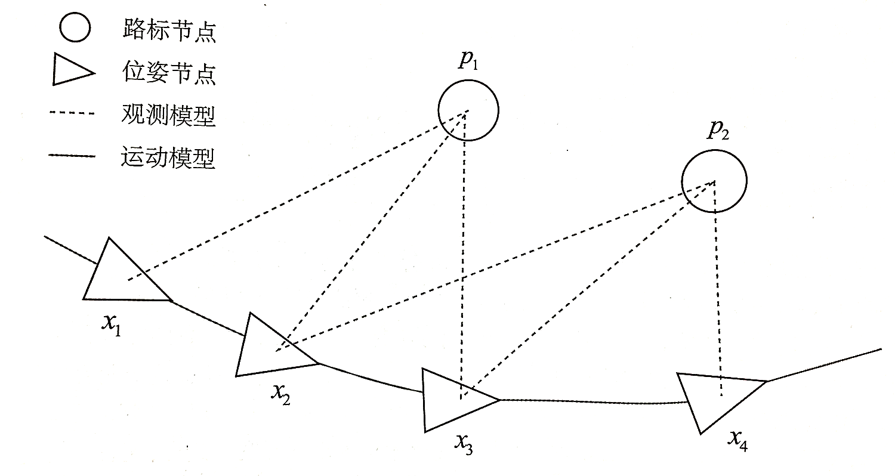
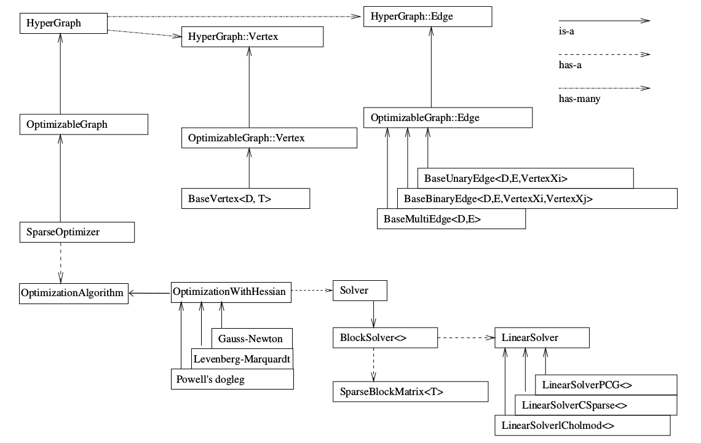

非线性优化
$ \rm SLAM$问题的数学描述
将连续时间采样为\(1,\cdots,K\) 个离散时间。用\(\pmb x\) 表示机器人自身的位置。机器人各时刻的位置为\(\pmb x_1,\cdots,\pmb x_K\) ，它们构成了机器人的轨迹 。地图方面，我们假设地图是由许多个路标组成的，而每个时刻，传感器会测量到一部分路标点，得到他们的观测数据。设路径点一共由\(N\) 个，用\(\pmb y_1,\cdots,\pmb y_N\) 表示它们。\(\pmb u_k\) 是运动传感器的读入或者输入，\(\pmb w_k\) 为该过程加入的噪声。
\[
\pmb x_k = f(\pmb x_{k-1},\pmb u_k)+\pmb w_k \tag{运动方程}
\]
\(\pmb z_{k,j}\) 为机器人在\(\pmb x_k\) 位置上看到路径点\(\pmb y_j\) 的观测数据。\(\pmb v_{k,j}\) 是观测的噪声。
\[
\pmb z_{k,j} = h(\pmb y_j,\pmb x_k)+\pmb v_{k,j} \tag{观测方程}
\]
状态估计问题
批量状态估计与最大后验估计
问题引出
在运动和观测方程中，我们假设两个噪声\(\pmb w_k,\pmb v_{k,j}\) 满足如下的高斯分布
\[
\begin{aligned}
&\pmb w_k \sim \mathcal N(0,\pmb R_k)\\
&\pmb v_{k,j} \sim \mathcal N(0,\pmb Q_{k,j})
\end{aligned}
\]
\(\pmb R_k,\pmb Q_{k,j}\) 为协方差矩阵。在这些噪声的影响下，我们希望通过带噪声的数据\(\pmb z\) 和\(\pmb u\) 推断位姿\(\pmb x\) 和地图\(\pmb y\) （以及它们的概率分布），这构成了一个状态估计问题。
解决方法
增量/渐进法 \(\rm incremental\) (滤波器)：由于在$ \rm SLAM\(过程中，数据是随时间逐渐到来的，根据已经持有的当前时刻的估计状态，在新的数据到来时进行更新。仅关心当前时刻的状态估计\) \pmb x_k$，不考虑之前的状态批法量 \(\rm batch\) ：把数据攒起来一并处理。可以在更大的范围达到最优化，被认为优于传统的滤波器，成了当前视觉$ \rm SLAM$的主流方法。\(\rm SfM, Structure\ from \ Motion\) 滑动窗口估计法 ：一种折衷方法，固定一些历史轨迹，仅对当前时刻附近的一些轨迹进行优化。
批量状态估计
机器人位姿和路标点坐标定义如下：
\[
\begin{aligned}
&\pmb x= \{\pmb x_1,\cdots,\pmb x_N\} \\
&\pmb y = \{\pmb y_1,\cdots, \pmb y_M \}
\end{aligned}
\]
用不带下标的\(\pmb u\) 表示所有时刻的输入，\(\pmb z\) 表示所有时刻的观测数据。对机器人的状态估计，从概率学的观点来看，就是已知输入数据\(\pmb u\) 和观测数据\(\pmb z\) 的条件下，求状态\(\pmb x,\pmb y\) 的条件概率分布
\[
P(\pmb x,\pmb y \mid \pmb z,\pmb u)
\]
特别的，如果不知道\(\pmb u\) ，则为\(\rm SfM\) 问题，即从许多图像中重建三维空间结构。
为了估计状态变量的条件分布，由贝叶斯公式，有
\[
P(\pmb x,\pmb y \mid \pmb z,\pmb u) = \frac{P(\pmb z,\pmb u\mid \pmb x,\pmb y)P(\pmb x,\pmb y)}{P(\pmb z,\pmb u)} \propto P(\pmb z,\pmb u \mid \pmb x,\pmb y) P(\pmb x,\pmb y)
\]
\(P(\pmb x,\pmb y \mid \pmb z,\pmb u)\) 是一个后验概率，\(P(\pmb z,\pmb u \mid \pmb x,\pmb y)\) 被称为似然 \(\rm Likehoid\) ，而\(P(\pmb x,\pmb y)\) 是一个先验 概率\(\rm Prior\) 。这样一个后验概率变成了一个似然和一个先验概率的乘积。直接求后验分布是困难的，但是求一个状态最优估计，使得在该状态下后验概率最大是可行的
\[
(\pmb x,\pmb y)^*_{\rm{MAP}} = \arg \max P(\pmb x,\pmb y \mid \pmb z,\pmb u) = \arg \max P(\pmb z,\pmb u \mid \pmb x ,\pmb y) P(\pmb x,\pmb y)
\]
如果我们不知道机器人位姿或路标大概在什么地方，也就没有了先验，则可以求解最大似然估计 \(\rm Maximize \ Likehood \ Estimation,MLE\) ，即在什么样的状态下，最有可能产生观测到的数据。
\[
( \pmb x,\pmb y)^*_{\rm{MLE}} = \arg \max P(\pmb z,\pmb u \mid \pmb x,\pmb y)
\]
最小二乘的引出
对某一次观测:
\[
\pmb z_{k,j} = h(\pmb y_j,\pmb x_k) + \pmb v_{k,j}
\]
由于\(\pmb v_k \sim \mathcal N(0,\pmb Q_{k,j})\) ，所以观测数据的条件概率为:
\[
P(\pmb z_{j,k} \mid \pmb x_k,\pmb y_j) = \mathcal N(h(\pmb y_j,\pmb x_k),\pmb Q_{k,j})
\]
考虑单次观测的最大似然估计，可以使用最小化负对数 来求一个高斯分布的最大似然。
考虑高斯分布\(x \sim \mathcal N(\mu,\Sigma)\) ,概率密度为
\[
P(x) = \frac {1}{\sqrt{(2\pi)^N det(\Sigma)}} \exp\bigg(-\frac12(x-\mu)^T\Sigma^{-1}(x-u)\bigg)
\]
两边取对数
\[
-\ln(P(x)) =\frac 12 \ln\bigg((2\pi)^N det(\Sigma) \bigg) + \frac 12 (x-\mu)^T \Sigma^{-1}(x-\mu)
\]
对数函数是单调递增的，对原函数求最大值即为对负对数求最小化。由于第一项与\(x\) 无关，可以略去。只需要最小化右侧的二次型项。代入$ \rm SLAM$观测模型，即相当于求
\[
\begin{aligned}
(\pmb x_k,\pmb y_j)^*
&= \arg \max \mathcal N(h(\pmb y_j,\pmb x_k),\pmb Q_{k,j})\\
&= \arg \min \bigg((\pmb z_{k,j}-h(\pmb x_k,\pmb y_j))^T \pmb Q_{k,j}^{-1}(\pmb z_{k,j}-h(\pmb x_k,\pmb y_j))\bigg)
\end{aligned}
\]
该式等价于最小化噪声项（即误差）的一个二次型。这个二次型称为马哈拉诺比斯距离 \(\rm Mahalanobis \ distance\) ,又称马氏距离 。它也可以看成由\(\pmb Q_{k,j}^{-1}\) 加权之后的欧氏距离，这里\(\pmb Q_{k,j}^{-1}\) 也叫信息矩阵 ，即高斯分布协方差矩阵之逆。
现在考虑批量时刻的数据。通常假设各个时刻的输入和观测时相互独立的。因此可以对联合分布进行因式分解
\[
P(\pmb z,\pmb u\mid \pmb x,\pmb y) = \prod_k P(\pmb u_k \mid \pmb x_{k-1},\pmb x_k) \prod_{k,j} P(\pmb z_{k,j} \mid \pmb x_k,\pmb y_j)
\]
这说明可以独立的处理各个时刻的运动和观测。定义输入和观测数据与模型的误差为
\[
\begin{aligned}
&\pmb e_{\pmb u,k} = \pmb x_k - f(\pmb x_{k-1},\pmb u_k)\\
&\pmb e_{\pmb z,j,k} = \pmb z_{k,j} - h(\pmb x_k,\pmb y_j)
\end{aligned}
\]
最小化所有时刻估计值与真实读数之间的马氏距离，等价于求最大似然估计。负对数允许把乘积变成求和
\[
\min J(\pmb x,\pmb y) = \sum_{k} \pmb e_{\pmb u,k}^T \pmb R_{k}^{-1}\pmb e_{\pmb u,k} + \sum_{k}\sum_{j} \pmb e_{\pmb z,k,j}^T \pmb Q^{-1}_{k,j}\pmb e_{\pmb z,k,j}
\]
至此得到了一个最小二乘问题 \(\rm Least\ Square\ Problem\) ，它的解就是状态的最大似然估计。由于噪声的存在，当我们把估计的轨迹与地图带入$ \rm SLAM$的运动、观测方程中时，并不会完美的成立。因此需要对状态的估计进行微调，使得整体的误差下降一点，最终达到一个极小值 。这是一个典型的非线性优化过程 。
非线性最小二乘
考虑一个最小二乘问题
\[
\min_{\pmb x} F(\pmb x) = \frac 12 \parallel f(\pmb x) \parallel _2^2
\]
其中，\(\pmb x \in \mathbb R^n\) ,\(f\) 是任意标量非线性函数\(f(\pmb x):\mathbb R^n \rightarrow \mathbb R\) 。
如果\(f\) 为简单的线性函数，可通过求导得出最优解。但是有时候导函数可能形式复杂，使得方程不易求解。对于不方便直接求解的最小二乘问题，我们可以用迭代得到的方式，从一个初始值出发，不断地更新当前的优化变量，使目标函数下降。具体步骤如下：
给定某个初始值\(\pmb x_0\)
对于第\(k\) 次迭代，寻找一个增量\(\Delta \pmb x_k\) ，使得\(\parallel f(x_k+ \Delta x_k)\parallel_2^2\) 达到极小值
若\(\Delta \pmb x_k\) 足够小，则停止
否则，令\(\pmb x_{k+1} = \pmb x_k + \Delta \pmb x_k\) ,返回第\(2\) 步
这让求解导函数为零的问题变成了一个不断寻找下降增量\(\Delta \pmb x_k\) 的问题。如何找到每次迭代点的增量，这是一个局部问题，我们只需要关心\(f\) 在迭代值处的局部性质而非全局性质。
一阶和二阶梯度法
考虑第\(k\) 次迭代，假设我们在\(\pmb x_k\) 处，想要寻找增量\(\Delta \pmb x_k\) ，那么最直观的方式是将目标函数在\(\pmb x_k\) 处进行泰勒展开
\[
F(\pmb x_k + \Delta \pmb x_k) \approx F(\pmb x_k) + \pmb J(\pmb x_k) \Delta \pmb x_k + \frac 12 \Delta \pmb x_k^T\pmb H(\pmb x_k) \Delta \pmb x_k
\]
其中\(\pmb J(\pmb x_k)\) 是\(\pmb F(\pmb x)\) 关于\(\pmb x\) 的一阶导数[也叫梯度、雅可比Jacobian矩阵]，\(\pmb H\) 则是二阶导数[海塞矩阵Hessian]，它们都在\(\pmb x_k\) 处取值。我们可以选择保留泰勒展开的一阶或二阶项，那么对应的求解方法则称为一阶梯度或二阶梯度法。
\[
\Delta \pmb x^* = - \pmb J(\pmb x_k)
\]
取增量为反向的梯度，即可保证函数的下降，通常我们还要再指定一个步长。
\[
\Delta \pmb x^* = \arg \min \bigg( F(\pmb x) + \pmb J(\pmb x) \Delta \pmb x + \frac 12 \Delta \pmb x^T \pmb H \pmb \Delta x \bigg)
\]
求等式右侧关于\(\Delta \pmb x\) 的导数并令其为零，则
\[
\pmb J + \pmb H \Delta \pmb x = 0 \Longrightarrow \pmb H \Delta \pmb x = -\pmb J \tag{牛顿法}
\]
高斯牛顿法
高斯牛顿法是最优化算法中最简单的方法之一。它的思想是将\(f(\pmb x)\) 进行一阶的泰勒展开，不同于一阶梯度法对\(F(\pmb x)\) 进行分析。
\[
f(\pmb x+ \Delta \pmb x) \approx f(\pmb x) + \pmb J(\pmb x) \Delta \pmb x
\]
\[
\Delta \pmb x^* = \arg \min \frac12 \parallel f(\pmb x) + \pmb J(\pmb x) \Delta \pmb x \parallel^2
\]
将上式展开后对\(\Delta \pmb x\) 求导，并令其为零
\[
\pmb J^T(\pmb x)f(\pmb x) +\pmb J^T(\pmb x) \pmb J(\pmb x) \Delta \pmb x =0
\]
\[
\pmb J^T(\pmb x) \pmb J(\pmb x) \Delta \pmb x = -\pmb J^T(\pmb x) f(\pmb x) \tag{增量方程}
\]
这个方程是关于变量\(\Delta \pmb x\) 的线性方程组，我们称其为增量方程，也称为高斯牛顿方程\(\rm Gauss-Newton \ equation\) 或正规方程\(\rm Normal \ equation\) 。令\(\pmb H(\pmb x) = J^T(\pmb x)J(\pmb x),\pmb g(\pmb x) = -\pmb J^T(\pmb x)f(\pmb x)\) ，则
\[
\pmb H \Delta \pmb x = \pmb g
\]
对比牛顿法，高斯牛顿法用\(\pmb J \pmb J^T\) 作为牛顿法中二阶Hessian矩阵的近似 ，从而省略了计算\(\pmb H\) 的过程。求解增量方程是整个优化问题的核心所在 。
总结高斯牛顿法的算法步骤为
给定初始值\(\pmb x_0\)
对于第\(k\) 次迭代，求出当前的雅可比矩阵\(\pmb J(\pmb x_k)\) 和误差\(f(\pmb x_k)\)
求解增量方程\(\pmb H \Delta \pmb x_k = \pmb g\)
若\(\Delta \pmb x_k\) 足够小，则停止。否则，令\(\pmb x_{k+1}=\pmb x_k+\Delta \pmb x_k\) ，否则返回第2步
有时候\(\pmb H\) 是病态的，这时用高斯牛顿法可能会导致局部近似不够准确。
列文伯格-马夸尔特方法
高斯牛顿法中采用的近似二阶泰勒展开只能在展开点附近有较好的近似效果，所以给\(\Delta \pmb x\) 添加一个范围，称为信赖区域 \(\rm Trust \ Region\) 。这个范围定有了在什么情况下二阶近似是有效的，这类方法也称为信赖区域方法 \(\rm Trust \ Region \ Method\) 。在信赖区域里，我们认为近似是有效的。
定义指标\(\rho\) 来刻画近似的好坏程度
\[
\rho = \frac{f(\pmb x+ \Delta \pmb x) - f(\pmb x)}{\pmb J(\pmb x)\Delta \pmb x}
\]
\(\rho\) 的分子是实际函数下降的值，分母是近似模型下降的值。如果\(\rho\) 较小，说明此时实际减小的值远小于近似见效的值，近似较差，则应该缩小近似范围，否则放大。
一个改良版的非线性优化步骤如下
给定初始值\(\pmb x_0\) ，以及初始优化半径\(\mu\)
对于第\(k\) 次迭代，在高斯牛顿法的基础上加上信赖区域，求解
\[
\min_{\Delta \pmb x_k} \frac 12 \parallel f(\pmb x_k) + \pmb J(\pmb x_k)\Delta \pmb x_k \parallel^2,\rm{s.t.} \ \ \parallel\pmb D\Delta \pmb x_k\parallel^2 \leq \mu
\]
其中,\(\mu\) 是信赖区域的半径，\(\pmb D\) 为系数矩阵。
计算\(\rho\)
若\(\rho > \frac34\) ,则设置$\mu=2\mu $
若\(\rho < \frac 14\) ,则设置\(\mu = 0.5\mu\)
如果\(\rho\) 大于某阈值，则认为近似可行。令\(\pmb x_{k+1} = \pmb x_k +\Delta \pmb x_k\)
判断算法是否收敛。如不收敛则返回第2步，否则结束。
对于第2步，这是一个带不等式约束的优化问题，用拉格朗日乘子构建拉格朗日函数
\[
\mathcal L(\Delta \pmb x_k,\lambda) = \frac 12 \parallel f(\pmb x_k)+\pmb J(\pmb x_k)\Delta \pmb x_k \parallel^2 + \frac{\lambda}{2}(\parallel \pmb D\Delta \pmb x_k \parallel^2 -\mu)
\]
对\(\Delta \pmb x\) 求导并令其为零
\[
(\pmb H + \lambda \pmb D^T\pmb D)\Delta \pmb x_k = \pmb g
\]
相对于高斯牛顿法，增量方程多了一个\(\lambda \pmb D^T\pmb D\) 。如果考虑它的简化形式\(D=E\) ，则
\[
(\pmb H + \lambda \pmb E) \Delta \pmb x_k = \pmb g
\]
当\(\lambda\) 较小时，\(\pmb H\) 占主要地位，近似于高斯牛顿法。当\(\lambda\) 较大，\(\lambda E\) 占主要地位，近似于一阶梯度下降法。
代码实现
研究问题
下面用不同方法进行曲线拟合，所研究的问题是一致的
考虑一条满足下列方程的曲线
\[
y = \exp(ax^2+bx+c)+w
\]
\(a,b,c\) 是曲线的参数，\(w\) 为高斯噪声，满足\(w \sim (0,\sigma^2)\) 。
可以求解下面的最小二乘问题以估计曲线参数
\[
\min_{a,b,c} \frac 12 \sum_{i=1}^N \parallel y_i - \exp(ax_i^2+bx_i+c)\parallel^2
\]
定义误差为
\[
e_i = y_i - \exp(ax_i^2+bx_i+c)
\]
可以求出每个误差项对于状态变量的导数
\[
\begin{aligned}
& \frac{\partial e_i}{\partial a} = -x_i^2 \exp(ax_i^2+bx_i+c)\\
& \frac{\partial e_i}{\partial b} = -x_i \exp(ax_i^2+bx_i+c)\\
& \frac{\partial e_i}{\partial c} = -\exp(ax_i^2+bx_i+c)\\
\end{aligned}
\]
于是\(\pmb J_i = [\frac{\partial e_i}{\partial a},\frac{\partial e_i}{\partial b},\frac{\partial e_i}{\partial c}]\) ,高斯牛顿法的增量为
\[
\bigg(\sum_{i=1}^{100}\pmb J_i^T (\sigma^2)^{-1}\pmb J_i\bigg) \Delta \pmb x_k = \sum_{i=1}^{100} - \pmb J_i^T(\sigma^2)^{-1} e_i
\]
注意这里的最小二乘法是求和形式的。事实上，这是最小二乘法的经典形式。当最优化目标函数是一个平方求和时，其对某个自变量的求导刚好是目标函数是单个平方和时的求和。所以，最小二乘法的目标函数是平方求和时，其导数矩阵直接把上面推导得矩阵求和即可。
1
2
3
4
5
6
7
8
9
10
11
12
13 //数据生成
constexpr int data_size = 100 ;
vector < double > data_x_list , data_y_list ;
constexpr double a = 1 , b = 2 , c = 1 ;
double sigma = 1 ;
std :: random_device rd ;
std :: mt19937 gen ( rd ());
std :: normal_distribution < double > dist ( 0 , sigma * sigma );
for ( auto i = 0 ; i < data_size ; i ++ ) {
double x = i / 100.0 ;
data_x_list . push_back ( x );
data_y_list . push_back ( exp ( a * x * x + b * x + c ) + dist ( gen ));
}
手写高斯牛顿法
1
2
3
4
5
6
7
8
9
10
11
12
13
14
15
16
17
18
19
20
21
22
23
24
25
26
27
28
29
30
31
32
33
34
35
36
37
38
39
40
41
42 void gauss ( const vector < double > & data_x , const vector < double > & data_y ) {
constexpr int iterations = 100 ;
double a = 2 , b = -1 , c = 5 ;
double cost = 0 , last_cost = 0 ;
double sigma = 1 ;
double inv_sigma = 1.0 / sigma ;
for ( int iter = 0 ; iter < iterations ; iter ++ ) {
Eigen :: Matrix3d H = Eigen :: Matrix3d :: Zero ();
Eigen :: Vector3d g = Eigen :: Vector3d :: Zero ();
cost = 0 ;
for ( auto i = 0 ; i < data_x . size (); i ++ ) {
double x_i = data_x [ i ];
double y_i = data_y [ i ];
Eigen :: Vector3d JT ;
double tmp = exp ( a * x_i * x_i + b * x_i + c );
JT [ 0 ] = - x_i * x_i * tmp ;
JT [ 1 ] = - x_i * tmp ;
JT [ 2 ] = - tmp ;
double error = y_i - exp ( a * x_i * x_i + b * x_i + c );
H += inv_sigma * inv_sigma * JT * JT . transpose ();
g += - error * inv_sigma * inv_sigma * JT ;
cost += error * error ;
}
Eigen :: Vector3d delta_x = H . ldlt (). solve ( g );
if ( isnan ( data_x [ 0 ])) {
std :: cout << " result is nan" << std :: endl ;
break ;
}
if ( iter > 0 && cost >= last_cost ) {
cout << "cost is bigger than last cost:" << last_cost << "-->" << cost << ",break" << endl ;
break ;
}
a += delta_x [ 0 ];
b += delta_x [ 1 ];
c += delta_x [ 2 ];
cout << "iterator " << iter << " cost :" << cost << endl ;
last_cost = cost ;
}
cout << a << " " << b << " " << c << endl ;
}
使用Ceres进行曲线拟合
\(\rm Ceres\) 是一个广泛使用的最小二乘问题求解库。\(\rm Ceres\) 求解的最小二乘问题最一般的形式如下
\[
\begin{aligned}
&\min_x \frac 12 \sum_i \rho_i \bigg(\parallel f_i(x_{i1},\cdots,x_{in})\parallel^2 \bigg)\\
&{\rm s.t.} \ \ l_j \leq x_j \leq u_j
\end{aligned}
\]
其中，\(x_1,\cdots,x_n\) 为优化变量，又称参数块 \(\rm Parameter \ blocks\) ，\(f_i\) 称为代价函数\(\rm Cost \ function\) ，也称为残差块 \(\rm Residual \ blocks\) ,在$\rm $ \(\rm SLAM\) 中也可以理解为误差项。\(l_j\) 和\(u_j\) 为第\(j\) 各优化变量的上限和下限。在简单情况下，可取\(l_j=-\infty,u_j = \infty\) 。此时，目标函数由许多平方项经过一个核函数 \(\rho(\cdot)\) 之后求和组成，\(\rho(\cdot)\) 又被称为损失函数\(\rm Loss function\) ，用于减少异常值对非线性最小二乘问题求解的影响。
使用步骤如下
定义每个参数块。参数块通常为平凡的向量，但是在\(\rm SLAM\) 里也可以定义成四元数、李代数这种特殊的结构。如果是向量，那么我们需要为每个参数块分配一个double数组来存储变量的值。
定义残差块的计算方式。残差块通常关联若干个参数块，对它们进行一些自定义的计算，然后返回残差值。\(\rm Ceres\) 对它们求平方和之后，作为目标函数的值。
残差块往往也需要定义雅可比的计算方式。在\(\rm Ceres\) 中，你可以使用它提供的"自动求导"功能，也可以手动指定雅可比的计算过程。如果要使用自动求导，那么残差块需要按照特定的写法书写：残差的计算过程应该是一个带模板的括号运算符。这一点我们通过例子来说明。
把所有的参数块和残差块加人\(\rm Ceres\) 定义的Problem对象中，调用Solve函数求解即可。求解之前，我们可以传入一些配置信息，例如迭代次数、终止条件等，也可以使用默认的配置。
1
2
3
4
5
6
7
8
9
10
11
12
13
14
15
16
17
18
19
20
21
22
23
24
25
26
27
28
29
30
31
32
33
34
35
36
37
38
39
40
41
42
43
44
45
46
47
48
49
50
51
52
53
54
55
56
57
58
59
60
61
62
63 struct PointAutoDiffResidual {
PointAutoDiffResidual ( double x , double y ) : x_ ( x ), y_ ( y ) {}
template < typename T >
bool operator ()( const T * const abc , T * residual ) const {
residual [ 0 ] = T ( y_ ) - ceres :: exp ( abc [ 0 ] * x_ * x_ + abc [ 1 ] * x_ + abc [ 2 ]);
return true ;
}
static ceres :: CostFunction * Create ( double x , double y ) {
return ( new ceres :: AutoDiffCostFunction < PointAutoDiffResidual , 1 , 3 > (
new PointAutoDiffResidual ( x , y )));
}
private :
const double x_ , y_ ;
};
class PointAnalyticResidual : public ceres :: SizedCostFunction < 1 , 3 > {
public :
PointAnalyticResidual ( double x , double y ) : x_ ( x ), y_ ( y ) {}
virtual ~ PointAnalyticResidual () {}
virtual bool Evaluate ( double const * const * abc ,
double * residuals ,
double ** jacobians ) const {
double tmp = ceres :: exp ( abc [ 0 ][ 0 ] * x_ * x_ + abc [ 0 ][ 1 ] * x_ + abc [ 0 ][ 2 ]);
residuals [ 0 ] = y_ - tmp ;
if ( jacobians != nullptr && jacobians [ 0 ] != nullptr ) {
jacobians [ 0 ][ 0 ] = - x_ * x_ * tmp ;
jacobians [ 0 ][ 1 ] = - x_ * tmp ;
jacobians [ 0 ][ 2 ] = - tmp ;
}
return true ;
}
private :
const double x_ , y_ ;
};
void ceres_fit ( const vector < double > & data_x , const vector < double > & data_y ) {
ceres :: Problem problem ;
double abc [ 3 ] = { 2 , -1 , 5 };
auto loss_function = new ceres :: HuberLoss ( 0.1 );
problem . AddParameterBlock ( abc , 3 );
for ( auto i = 0 ; i < data_x . size (); i ++ ) {
auto cost_auto_function = PointAutoDiffResidual :: Create ( data_x [ i ], data_y [ i ]);
auto cost_analytic_function = new PointAnalyticResidual ( data_x [ i ], data_y [ i ]);
problem . AddResidualBlock ( cost_analytic_function , loss_function , abc );
}
ceres :: Solver :: Options options ;
options . linear_solver_type = ceres :: DENSE_NORMAL_CHOLESKY ;
options . minimizer_progress_to_stdout = true ;
ceres :: Solver :: Summary summary ;
ceres :: Solve ( options , & problem , & summary );
cout << summary . BriefReport () << endl ;
cout << "estimated a,b,c = " ;
for ( auto a : abc ) cout << a << " " ;
cout << endl ;
}
使用g2o进行曲线拟合
\(\rm g2o\) 是一个基于图优化的库。为了了解某个优化变量\(x_j\) 存在于多少个误差项中，引入了图优化 。图优化中图的顶点表示优化变量 ，边表示误差项 。

将图像拟合问题抽象为图优化，只需要记住结点为优化变量，边为误差项 即可。一般需要以下步骤
定义顶点和边的类型
构建图
选择优化算法
调用\(\rm g2o\) 进行优化，返回结果
在我们选择的研究问题中，只有一个结点为\((a,b,c)\) ，有100个从该节点出发，指向该节点的数据。
首先从\(\rm g2o\) 派生除了用于图像拟合的图优化顶点和边 ，同时重写了重要的虚函数 ：
顶点的更新函数：oplusImpl。我们知道优化过程最重要的是增量\(\Delta \pmb x\) 的计算，而该函数处理的是\(\pmb x_{k+1} = \pmb x_k + \Delta \pmb x\) 的过程
顶点的重置函数： setToOriginImpl。 这是平凡的，我们把估计值置零即可。
边的误差计算函数： computeError。 该函数需要取出边所连接的顶点的当前估计值，根据曲线模型，与它的观测值进行比较。这和最小二乘问题中的误差模型是一致的。
边的雅可比计算函数：lnearizeOplus。这个函数里我们计算了每条边相对于顶点的雅可比。
存盘和读盘函数： read,write。 由于我们并不想进行读/写操作，所以留空。
\(\rm g^2o\) 源代码地址

g2o进行曲线拟合 [TODO]
更新历史 联系我 Jacy CC BY-SA 4.0 和 SATA